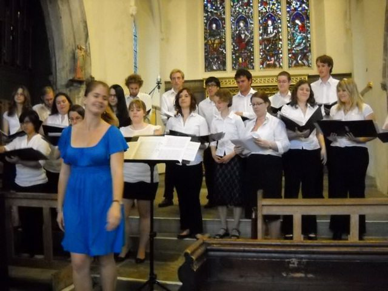

The Glee Summer 2010 concert took place at St. Helen's Church, at 7.30pm, on Tuesday 29th June.
Also this term - we had a treat: singing at the opening of the new Goodricke College.

Musical Director: Anna Stephenson
Assistant Musical Director: James Taylor
Soprano
Yvonne Chia
Kathryn Harding
Rachel Haynes
Abigail King
Hannah Montague-Fuller
Anna Stephenson
Jo Vaizey
Alto
Elaine Coxon
Lucy Davies
Lucy Pell-Walpole
Clare Rainsford
Lucy Shepherd
Victoria Touzel
Tenor
Stuart Roberts
James Taylor
Jonathan Wong
Bass
Michael Denniss
Laurent Michaux
Peter Sutton
Baillie Watterson
Ning Xi Li
My Bonny Lass She Smileth (Thomas Morley)
Good Wine (E.J. Moeran)
How Calmly The Evening (Elgar)
Morning Glory, Starlit Sky (Barry Rose)
- Soloist : Anna
Toss The Pot (trad. arr. Ravenscroft)
Shenandoah (trad. arr. James Erb)
The Goslings (Frederick Bridge)
Up Where We Belong (Jennings/Saint-Marie/Nitzsche arr. Strommen)
Interval
What Shall We Do With The Drunken Sailor? (trad. arr. Wombat)
Marianne (trad. arr. Wilby)
I Do Like To Be Beside The Seaside (Glover-Kind arr. Carter)
Don't It Make My Brown Eyes Blue (Leigh arr. Woods)
The Bare Necessities (Gilkyson arr. Hare)
Sit Down, You're Rockin' The Boat (Loesser arr. Maredith)
- Soloists : Stuart, Baillie, Michael
Jabula Jesu (trad. arr. Hatfield and Stephenson)
«Spring 2010« »Christmas 2010»
This work is licensed under CC BY-SA 4.0